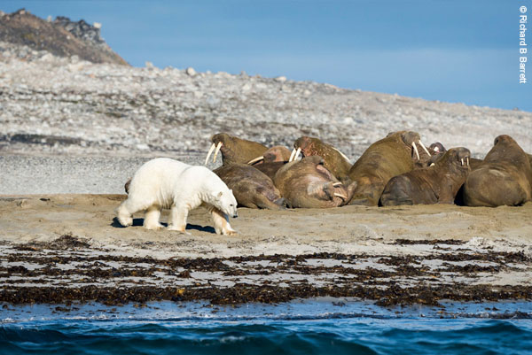
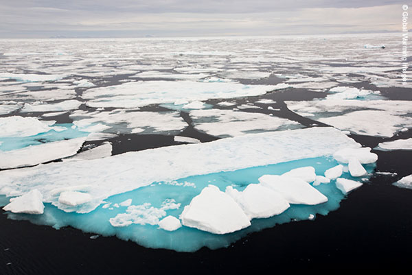
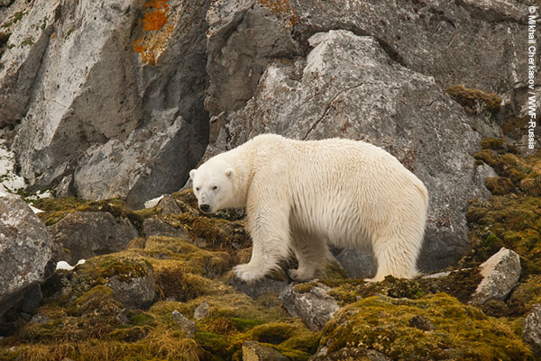
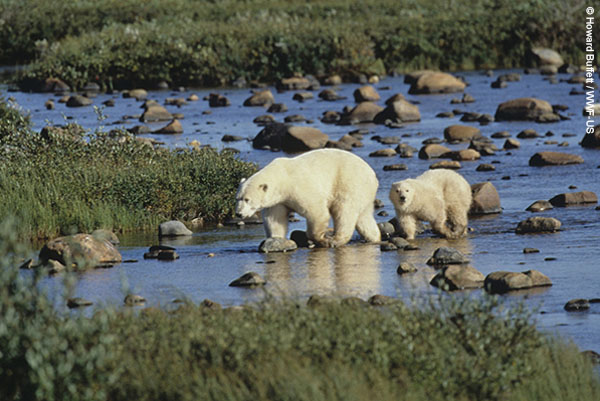
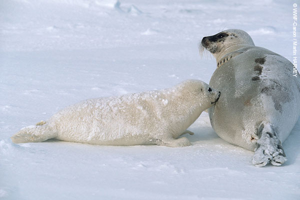
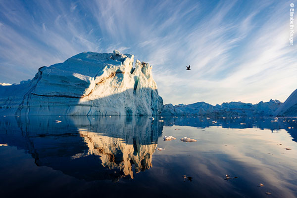
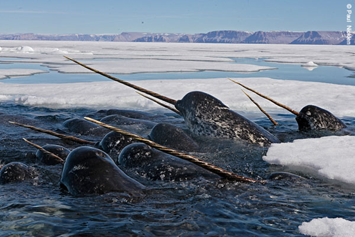

북극곰은 먹이사슬 최상위에 존재하는 지상 최대의 육식 동물입니다.
라틴어로 ‘바다의 곰’을 의미하는 학명 Ursus maritinus에서 알 수 있듯이 북극곰은 생의 대부분을 바다와 빙하 주변에서 보냅니다
북극곰은 어디에 사나요?
북극곰은 북극해, 캐나다 일부 지역, 알래스카, 러시아, 그린란드와 노르웨이(스발바르 제도)에 걸쳐 서식합니다.
먹이를 찾거나 번식을 하기 위해 먼 거리를 걷거나 수영할 수 있습니다. 어떤 때는 최대 600,000 평방 킬로미터에 이르는 광활한 지역까지도 이동합니다.


북극곰은 왜 멸종위기에 처했을까요?
가장 큰 위협: 기후변화
기후변화로 인해 북극은 전 세계 평균보다 2배 정도 빠르게 기온이 상승하고 있습니다.
지속적인 해빙의 감소에 따른 서식지 상실로 2008년 5월 북극곰은 미국 멸종위기종보호법(Endangered Species Act)에 의해 멸종위기종으로 지정되었습니다.
북극곰은 생존을 위해 많은 양의 지방을 필요로 하기 때문에 먹이를 사냥하는데 대부분의 시간을 사용합니다.
주 먹잇감은 주로 바다표범과 바다물범이지만, 해빙의 감소는 북극곰이 사냥에 성공하는 확률을 점차 줄이고 있습니다.
북극곰들이 먹이 없이 지내는 기간이 길어질수록 건강 상태도 악화됩니다.
허드슨 베이의 빙하가 1주일씩 빨리 녹을 때마다 북극곰들은 약 10kg씩 체중이 감소한 채 해안가를 찾아 오고 있습니다.
건강하지 못한 북극곰들은 새끼를 덜 낳기 때문에 해당 지역의 멸종으로 이어질 수 밖에 없는 상황입니다.


또 다른 위협
석유탐사와 무분별한 개발
석유와 천연가스 탐사, 지나친 산업 개발은 북극곰과 북극 생태계에 악영향을 미치고 있습니다.
개발 과정에서 발생하는 석유 유출은 곰의 체온을 유지시켜주는 털의 보온 효과를 떨어뜨릴 수 있습니다.
현재까지 북극해의 석유 유출을 완벽히 막거나 컨트롤할 수 있는 방법이 없어 북극 생태계는 지속적으로 위험에 처해 있습니다.
독성물질 오염
순수하고 깨끗한 이미지의 북극은 이제 멀게만 느껴집니다. 북극의 먹이 사슬에서 유해 화학물질의 농도는 매우 높게 측정되고 있습니다.
다이옥신, 퓨란, DDT 등의 잔류성 유기오염물질(POPs)은 대기와 해류를 타고 먼 거리를 이동하여 극지방에까지 영향을 끼칩니다.
이미 배출된 독성 물질은 자연 분해가 거의 되지 않아 생물학적 기능(성장, 번식, 면역)을 저해하고 어미곰의 모유를 오염시키고 있습니다.
인간과의 충돌
해빙의 감소는 북극곰이 어쩔 수 없이 육지에서 더 많은 시간을 보내도록 만들고 있습니다.
먹이와 살 곳을 찾아 북극 해안가의 인간 주거지로 접근하는 경우가 늘어남에 따라 해당 지역 사회와 북극곰 모두에게 위험한 상황을 초래합니다.

북극곰이 왜 중요할까요?
해빙에 의존해 살아가는 북극곰은 기후변화로부터 직접적인 영향을 받는 중요한 지표종으로
북극 생태계 전반과 기후변화의 흐름을 이해하는데 큰 도움을 줍니다.
또한 북극곰은 먹이사슬의 최상위 포식자로써 북극 생태계의 균형을 유지하는 데 중요한 역할을 합니다.
북극곰의 위기는 북극 해양 생태계의 또 다른 문제를 파악하는 신호일 수 있습니다.
최근 발표된 모든 연구 결과 지표는 북극의 해빙이 무서운 속도로 녹고 있음을 극명하게 보여줍니다.

